Mobile photography by Mohit Suthar
Captured By ❤️
A personal gallery of moments captured on a VIVO Y39, from quiet nature frames to low-light streets and candid details.
Photographs
Click any photograph to view it full screen.
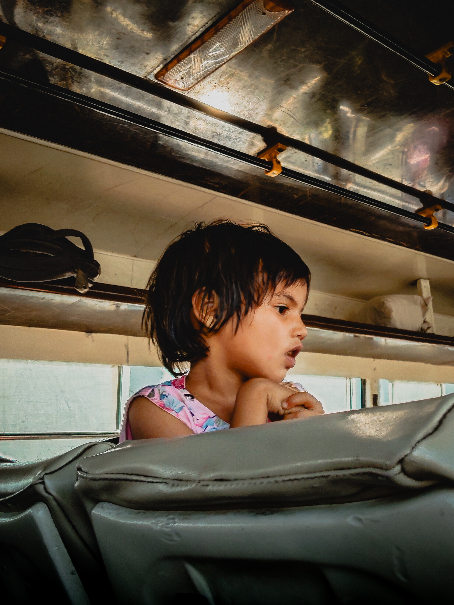
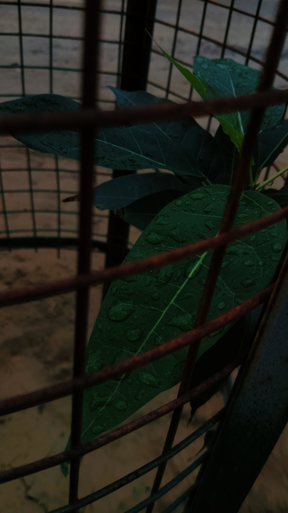
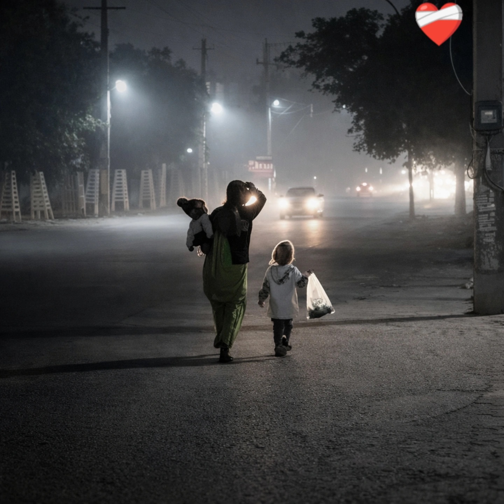
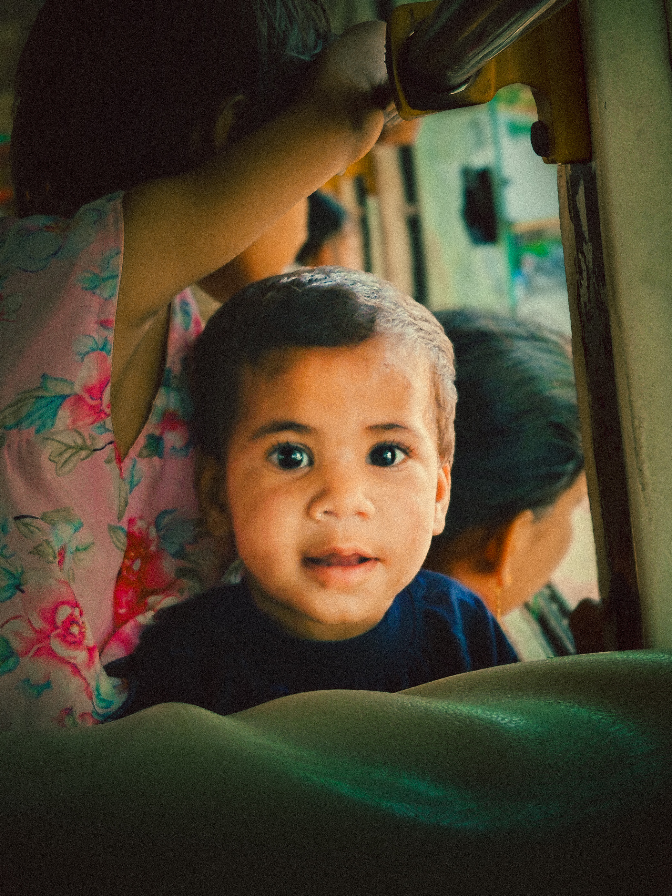
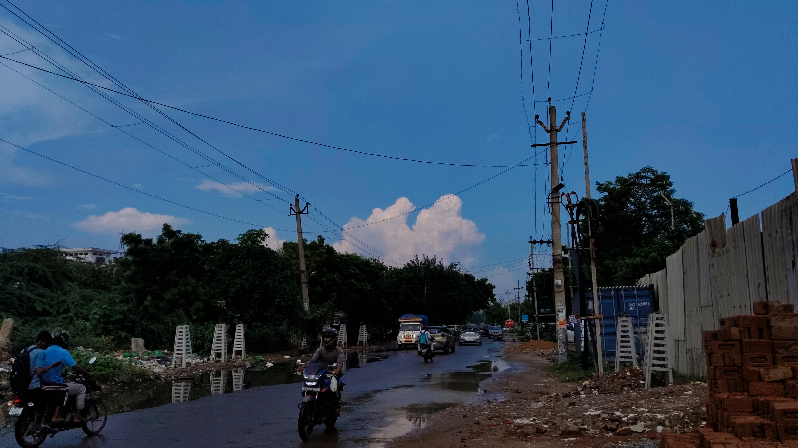
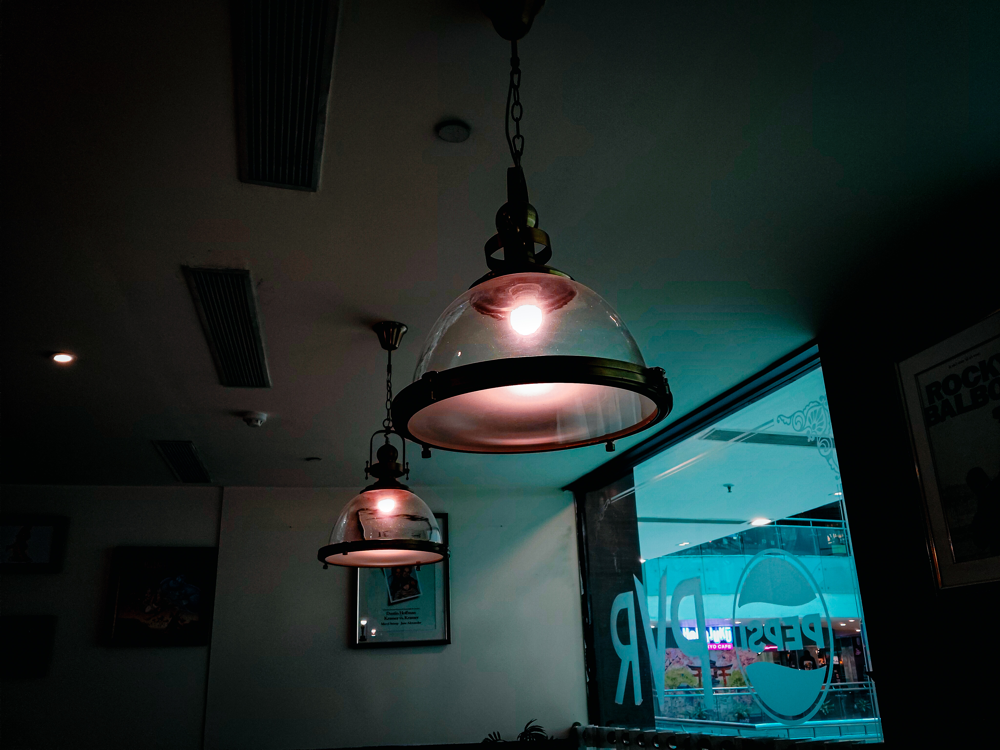
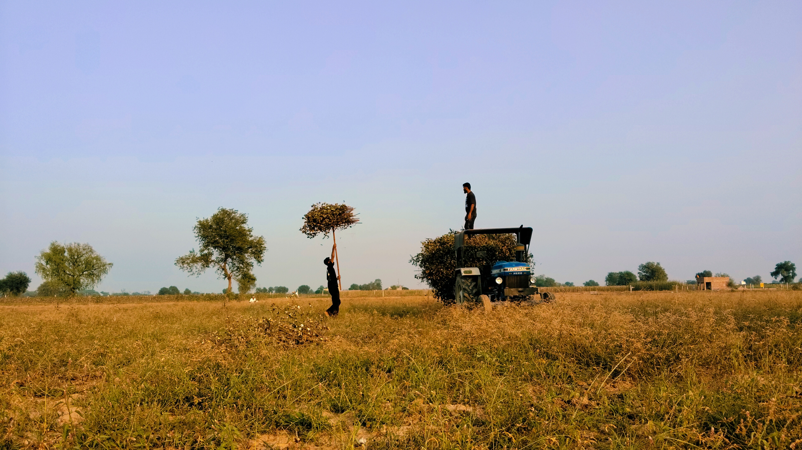
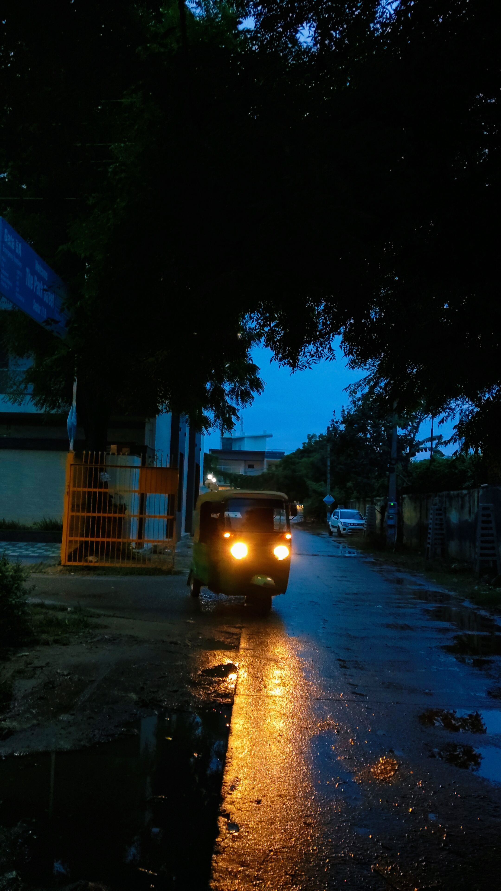
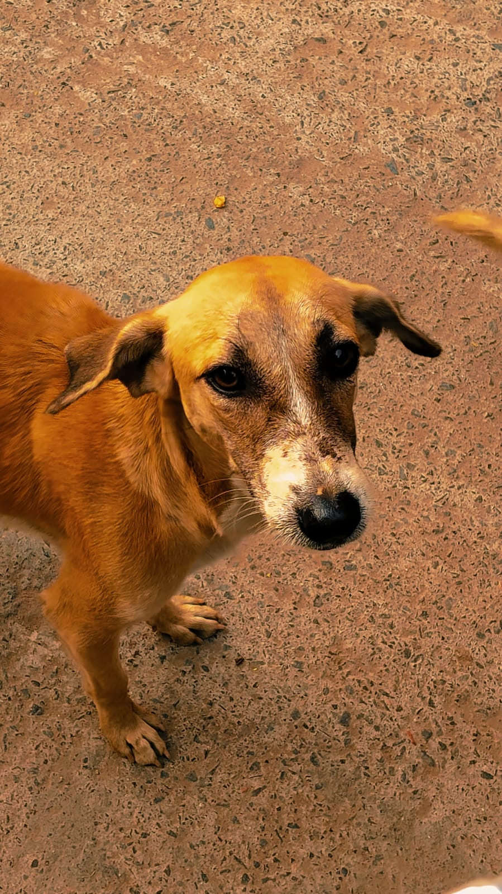
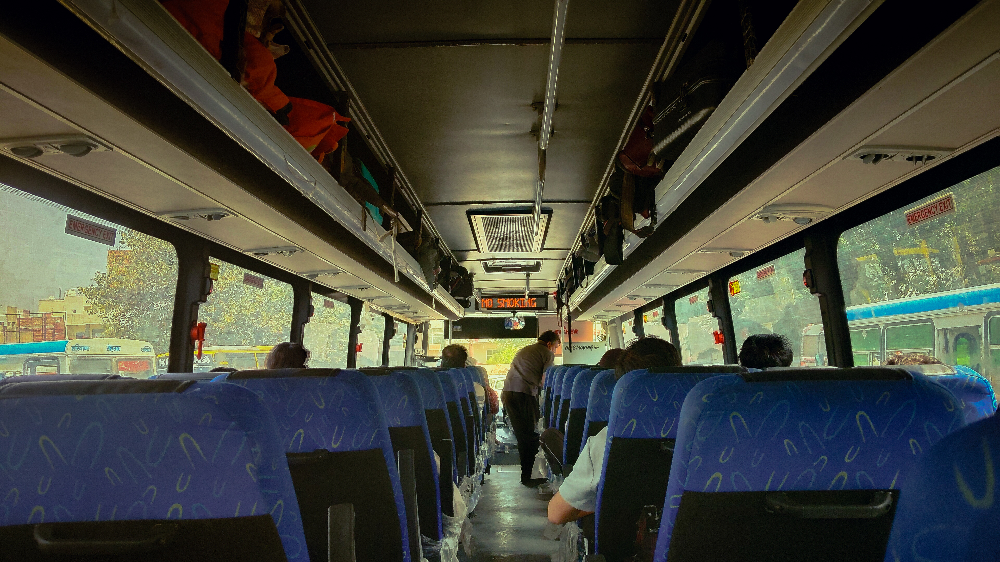
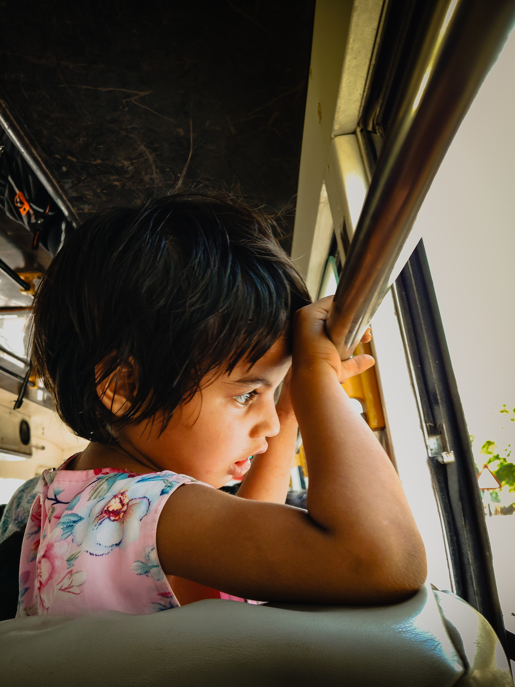


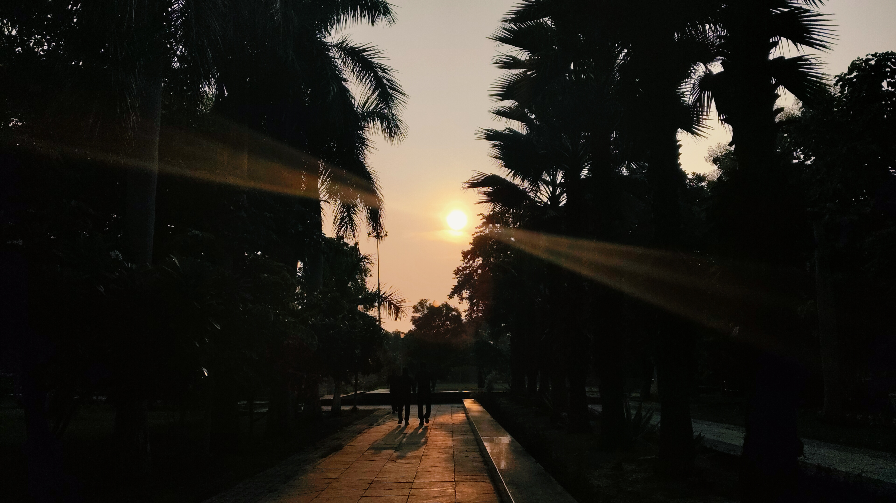
Behind the lens
About Mohit
Hi, my name is Mohit. I am a 19-year-old photographer and a Computer Engineering student at YMCA Faridabad. Photography started for me as a way to notice ordinary moments more carefully. I capture small details that people often walk past.
I shoot on a VIVO Y39 5G and enjoy creating images that feel simple, moody, and story-driven. This gallery brings together my interest in technology, creativity, and visual storytelling, one frame at a time.